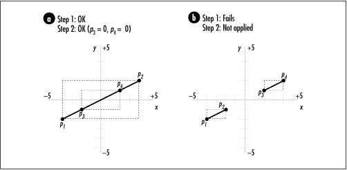
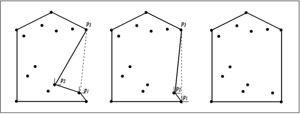

17.11 Questions and Answers
Q: One application of geometric
algorithms mentioned at the start of this chapter was
determining whether the track of an object transgresses a
restricted region. If we assume that the track we follow
begins outside of the restricted region, a simple approach to
this problem is to determine whether any line segment in the
track intersects with any line segment defining the restricted
region. What is the running time of this approach if we use
the lint operation presented in
this chapter?
A: The runtime
complexity of this approach is O
(nm), where n is the number of line segments in
the track and m is the number
of line segments defining the restricted region. This is
because for each of the n line
segments in the track, we call lint once for each of the m line segments in the restricted
region. Since lint runs in a
constant amount of time, the runtime complexity of the
solution overall is O (nm).
Q: Determining
the orientation of two points with
respect to a third is an important part of the algorithms
presented for determining whether line segments intersect and
computing convex hulls. Formally, given points p1 , p2, and p3, we determine the
orientation of p3
relative to p2 with
respect to p1 by
treating the line segments from p1 to p2 and p1 to p3 as vectors U and V. We
then use the sign of the z-component of the cross product U x
V as a gauge of orientation. What is the orientation of the
points if we compute the cross product V x U? In other words,
given a specific orientation of p3 relative to p2, what is the
orientation of p2
relative to p3?
A: The answer
to this question is a matter of perspective. Imagine two
people facing forward in a room with a door behind them.
Unless the two individuals line up perfectly with the door
(one in front of the other), person A will see person B to his left, whereas person B will see person A to his right, and vice versa. The
neat thing about cross products is that they reflect this
perspective mathematically. When we compute the orientation of
p 3 relative to
p 2 with respect to
p1, we get an
indication of where p
3 is from the perspective of p 2. For example, p 3 may be clockwise from
p 2. When we compute
the orientation of p
2 relative to p
3, we get an indication of where p 2 is from the
perspective of p 3.
These perspectives are always equal but opposite to one
another (except in the boundary case when p 2 and p 3 form a straight line
with p1). That is,
U x V is always equal to but of opposite
sign as V x U (if p 2 and p 3 form a straight line
with p 1, U x V
and V x U are both 0, and the line segments
from p1 to p 2 and p1 to p 3 are collinear). The
formula given earlier in the chapter for z1 when testing for
intersecting line segments comes from U x V.
To compute V x U, we exchange the positions of x2 and x3 and of y2 and y3 in the formula. This
yields an equivalent result but with the sign reversed.
Therefore, if p 3 is
clockwise from p 2,
for example, this tells us that p 2 is counterclockwise
from p 3, as we
would expect.
Q: To test
whether two line segments from points p1 to p2 and p3 to p4 intersect, we first
examine whether the bounding boxes of the line segments
intersect and then compare the orientation of p3 relative to p2 with that of p4 relative to p2. In what situation do
the bounding boxes intersect when the orientations of both
p3 and p4 are 0? Is it possible
to have bounding boxes that do not intersect when the
orientations of p3
and p4 are both
0?
A: Recall that
when the orientation of either p
3 or p4 is 0, it means that the
line segment from either p1 to p 3 or p1 to p4 is collinear with the
line segment from p1
to p 2. If the
bounding boxes of the two line segments intersect as well,
this tells us that at least some parts of the segments overlay
each other (see Figure
17.9a). Therefore, the line segments intersect. On the
other hand, it is possible to have two line segments that are
collinear without intersecting. This occurs when the segments
would overlay each other if either were long enough, but
neither has the length necessary to do so (see Figure
17.9b).

Q: In this chapter we learned that
the smallest polygon surrounding a set of points is called a
convex hull. This name implies that the polygon is always
convex. Why is this?
A: Recall that
a polygon is convex if any line
segment connecting two points inside the polygon lies
completely inside the polygon itself; otherwise, the polygon
is concave. To understand why a convex
hull is always convex, consider a concave polygon that
surrounds a set of points. For any sequence of three points
p1, p 2, and p 3 defining a concave
region, if we replace the edges from p1 to p 2 and p 2 to p 3 with a single edge
from p1 to p 3, we can reduce the
size of the polygon while keeping p 2 enclosed. We know that
the size of the polygon will be reduced because it is always
shorter to go from one point to another than through a third
point first. We know that p
2 will still be enclosed by the resulting polygon
because the angle from p
2 to p 3
is less than the angle from p1 to p 2. Therefore, since a convex
polygon will always be shorter than any concave one that
encloses the same points, a convex hull must be convex (see Figure
17.10).

Q: Suppose in
the approximation for distances on Earth presented in this
chapter we would like to improve the method used in the
function geodist. Specifically,
we would like to do something to take into account the change
in the Earth's radius at different latitudes and longitudes.
How can we do this?
A: One way to
make this improvement is to use the fact that both points
passed into geodist have their
own value for the spherical coordinate r. When we treat the Earth as a perfect
sphere, we set the rho member of each point to
the same value since we are considering the distance from the
Earth's center to the surface to be the same everywhere.
However, a better approach would be to set rho
for each point to the actual distance from the center of the
Earth to the point and then compute an average of the two
rho members for the radius of the arc.
Although this does not perfect the distance computation, it
does generally improve it. |